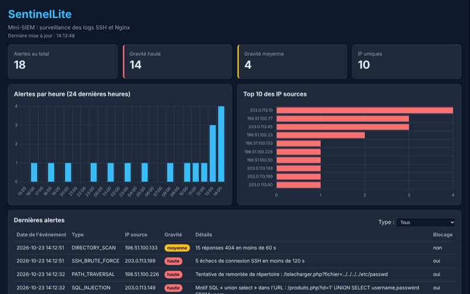

SentinelLite
Mini-SIEM : lit les logs SSH et Nginx d'un serveur Linux, détecte les attaques courantes (brute force SSH, scan de répertoires, injection SQL, remontée de répertoire), les enregistre en base SQLite et les affiche sur un tableau de bord web.
Voir le code sur GitHub